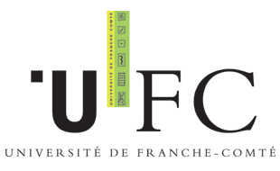

J. G. Fernández-Trincado
I am now in the final year of my Ph.D. thesis at the Université de Franche-Comté - UFC, Besancon, France, under a CNES Doctoral research grants. I received my Master Degree MSc. in Physics from Universidad de Los Andes, Venezuela in January, 2014.
Contribution to Scientific Software
PhD. project dedicated to the improvement of the kinematics of the Besancon Galaxy Model. I developed GRAPOT2016 an extended and updated version of the Gravitational potential of the Besancon Galaxy model. My main contribution has been at the kinematics and dynamics of the model, including a “Triaxial bar”, and an axisymmetric three-dimensional “Stellar Halo”. Also, a review and update of atmosphere models has been done for low mass stars.
Since 2014, I am the administrator of several astronomical public programs and reduction pipelines written in Fortran and Python codes, available in Public repository.
Contact
Institut UTINAM - UMR CNRS 6213, France
Email: jfernandez@obs-besancon.fr
Research Interests
Theoretical and observational astrophysicist. Interests include galaxy evolution, orbital dynamics, GAIA data analysis using Galaxy Modelling and computational astrophysics.
______________________________________________________________________________________________Affiliations
 |
 |  |
 |
 |
Page maintained by J. G. Fernandez-Trincado
Last modified: Tue August 18 12:59:35 CDT 2015